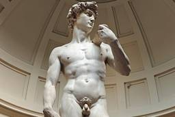
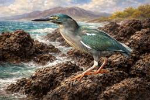

ナゾロジー
https://nazology.kusuguru.co.jp
身近に潜む科学現象から、ちょっと難しい最先端の研究まで、その原理や面白さを分かりやすく伝えられるようにニュースを発信していきます。最新の科学技術やおもしろ実験、不思議な生き物を通して、もう一度、皆さんの心にナゾを解き明かす「ワクワクの火」を灯したいと思っています。
フィード
廃墟で朽ち果てた「VHSテープ」を修復、そこに映っていたものとは？
ナゾロジー
古びた廃墟の床に転がる、泥まみれのVHSテープ。 それはただのゴミのように見えますが、中にはかつて誰かが記録した「時間」が閉じ込められています。 では、その中には何が写されているのでしょうか？ この疑問に真正面から挑んだのが、アメリカ・ジョージア州のYouTuber、ブレイディ・ブランドウッド（Brady Brandwood）さんです。 彼は10年以上も風雨にさらされていたVHSテープやCDを回収し、実際に修復・再生する実験を行いました。 実際の映像とともに見てみましょう。
3時間前
「最古の犬を発見」5000年ぶん更新された「人類最初の相棒」の記録
ナゾロジー
イギリスのロンドン自然史博物館（NHM）とオックスフォード大学の研究チームによって、氷河期の終わりごろにはすでに「犬」が存在し、現代のヨーロッパからトルコにかけて広く分布していた可能性が示されました。 これまで確実な「遺伝学的に確認された最古の犬の証拠」は約1万900年前とされてきましたが、今回の研究で約1万5800年前まで5000年ほど一気にさかのぼったのです。 しかもトルコで見つかった犬のDNAを詳しく調べると、遠く離れたイギリスの犬と驚くほど近い親戚関係にあることが分かりました。 オックスフォード大学の発表において研究者たちは、「犬が初期の人間社会の暮らしを大きく変える、いわばゲームチェンジャーだった可能性もある」と述べています。 犬はいつ、どのようにして人間の世界に入り込んだのでしょうか？ この研究成果は2026年3月25日に科学誌『Nature』で発表されました。
4時間前

最新のペニス研究で「男性のGスポット」の意外な姿が発見された 2
2
ナゾロジー
スペインのサンティアゴ・デ・コンポステーラ大学（USC）で行われた研究によって、陰茎の感覚は亀頭の裏側にある小さな領域に偏っており、そこが「男性版Gスポット」のような場所を形成していることが示されました。 今回の研究は、昔から「そこが敏感だ」と語られてきた感覚を、気分や体験談ではなく、神経レベルで調べられました。 さらに研究では、その偏りは胎児の時期から作られていく可能性があると記されています。 私たちが“感じやすい場所”は、生まれる前からどのように配線されていくのでしょうか。 研究内容の詳細は2025年9月19日に『Andrology』にて発表されました。
5時間前
地球外の金属で武器を作っていた「古代文明」を発見
ナゾロジー
約3000年前、中国のある古代文明は「宇宙から落ちてきた金属」を使って武器のような道具を作っていたようです。 中国・四川大学の研究チームは、三星堆（さんせいたい）遺跡から出土した鉄製遺物を分析し、それが隕石由来の金属で作られている可能性が高いことを明らかにしました。 この発見は、この地域で鉄を作る技術が広まる以前に、宇宙から届いた鉄を使っていたことを示す重要な証拠とのことです。 研究の詳細は2026年2月17日付で学術誌『Archaeological Research in Asia』に掲載されています。
8時間前

学生が「新種の鳥」をガラパゴス諸島で発見 1
ナゾロジー
ダーウィンの進化論を形づくる舞台となったガラパゴス諸島。 すでに徹底的に研究され尽くした場所と思われがちですが、そこにはいまだ解かれていない謎が残されています。 そして今回、その謎に挑んだのは、一人の大学院生でした。 米サンフランシスコ州立大学（SFSU）の大学院生エズラ・メンダレス氏は、長年「ありふれた鳥」とされてきたガラパゴスのサギに注目。 その結果、この鳥が実はこれまで知られていなかった独立した新種であることを明らかにしたのです。 研究の詳細は2026年3月16日付で学術誌『Molecular Phylogenetics and Evolution』に掲載されています。 【新種として認定されたガラパゴス・ラヴァサギの実際の画像がこちら】
13時間前
ローマ闘技場の「女性」猛獣戦士の”初の姿”が報告される 1
ナゾロジー
古代ローマでは闘技場で人間や動物による剣闘士試合が行われていました。 剣闘士同士が戦う場面がよく知られていますが、人間がヒョウやクマなどの猛獣と向き合う見世物も人気を集めていました。 今回、アメリカ・カリフォルニア大学バークレー校（UCB）の研究者により、こうした猛獣戦を描いたモザイクの写しが再検討され、女性の猛獣戦士を示す初の視覚資料である可能性が示されました。 研究は2026年3月22日付で『The International Journal of the History of Sport』に掲載されています。
13時間前
同じ食事メニューが「ダイエット効果を高める」可能性 1
ナゾロジー
ダイエットに挑戦すると、多くの人が「栄養バランスよく、できるだけ多様な食事を取り入れるべき」と考えがちです。 しかし反対に、もし「毎日ほぼ同じメニューを食べること」が、むしろ減量効果を後押しするとしたらどうでしょうか。 米ドレクセル大学（Drexel University）の研究チームはこのほど、食事の「ルーティン化」が減量の成功に関係する可能性を明らかにしました。 研究の詳細は2026年の学術誌『Health Psychology』に掲載されています。
18時間前
動かず健康に！「空気イス」はランニングよりも高血圧の改善に役立つ 1
ナゾロジー
高血圧に対処する方法として、定期的に走ることが勧められたりします。 しかしそこまでの運動習慣を持つのはなかなか難しいものです。 イギリスのカンタベリー・クライスト・チャーチ大学（CCCU）を中心とする研究チームが、複数の運動法を比較した大規模分析を行い、「動かない運動」であるアイソメトリック・エクササイズが、血圧を下げるうえで最も有力な方法である可能性を示しています。 この研究は2023年10月6日付の医学誌『British Journal of Sports Medicine』に掲載されました。
18時間前
仕事への意欲が高い人ほど職務とは無関係な追加業務を振られやすい 2
ナゾロジー
「仕事が楽しく、今の業務にやりがいを感じている」――そんな前向きな姿勢で働く人ほど、なぜか本来の職務とは直接関係のない事務作業や委員会活動といった、付随的な業務を割り振られてしまう、職場でそんな問題を目にしたことはないでしょうか。 日本でも、仕事のやりがいを理由に不当な負担を強いる「やりがい搾取」という言葉が注目されてきましたが、多くの人が職場で感じる「なぜか頑張る人ほど損をする」構図について、新たな研究は、管理者が陥りやすい特定の心理的偏りが関係している可能性を報告しています。 この実態を調査したのは、アメリカのノースイースタン大学（Northeastern University）のサンガ・ベ（Sangah Bae）助教授と、コーネル大学（Cornell University）のケイトリン・ウーリー（Kaitlin Woolley）教授らの研究チームです。 サンガ助教授自身、かつて若手…
1日前
人類初の「宇宙遊泳」に成功した男、裏で起きていた「絶体絶命の危機」とは？ 1
ナゾロジー
1965年3月18日、ソ連の宇宙飛行士アレクセイ・レオーノフは、人類で初めて宇宙船の外へ出て「宇宙遊泳」を行った人物として歴史に名を刻みました。 現在、宇宙遊泳は国際宇宙ステーションの運用や修理でも欠かせない作業ですが、その最初の一歩は、華々しい偉業であると同時に、ほとんど事故寸前の綱渡りでもありました。 宇宙船の外へ出て地球を見下ろす姿は、いかにも未来的で優雅に見えます。 しかし実際のレオーノフが味わっていたのは、静かな感動だけではありませんでした。 宇宙服が膨張して宇宙船に戻れなくなり、酸素を自分で抜いて減圧症の危険に身をさらし、ようやく帰還した後も、宇宙船は次々とトラブルに襲われたのです。 今回は、人類初の「宇宙散歩」の裏側で、レオーノフがどれほど深刻な危機をくぐり抜けていたのかを見ていきます。
1日前